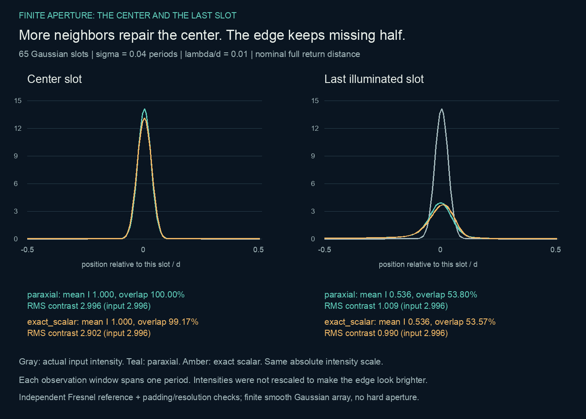

Integer diffraction orders can rephase without a lens. A useful image also depends on illumination coherence, illuminated extent and the measurement used. These are bounded scalar calculations illustrating established physics, not laboratory measurements or new discoveries.
In one computed angular-averaging case, a registered centered shape cosine is 0.999658 while only 0.001205 of the original RMS contrast remains. The normalization discards amplitude. This describes a specified source ensemble and smooth periodic model; it is not a universal fidelity claim.
Coherence methods and limits · Numerical results
For 65 smooth Gaussian slots at the nominal paraxial return, the central one-period window nearly reconstructs its input. The last-slot window has field overlap 0.538 and mean intensity 0.536, with absolute RMS contrast 1.009 versus input 2.996. Windows, scalar propagation and Gaussian illumination are fixed; this does not describe a hard stop or establish a universal slot-count threshold.

| Model and window | Mean intensity | Field overlap | Absolute RMS contrast |
|---|---|---|---|
| Input · either window | 1.000000 | 1.000000 | 2.995590 |
| Paraxial · center slot | 1.000000 | 1.000000 | 2.995574 |
| Exact scalar · center slot | 1.000000 | 0.991738 | 2.902186 |
| Paraxial · last slot | 0.535616 | 0.537959 | 1.009326 |
| Exact scalar · last slot | 0.535616 | 0.535660 | 0.989804 |
Each window spans one period, with position relative to its slot from −0.5 to 0.5. Intensities were not rescaled to brighten the edge. Gaussian width σ = 0.04 periods, λ/d = 0.01, nominal full return distance. Values are dimensionless model outputs; field overlap is not transmitted power.
Finite-array methods and convergence controls · Numerical results
The source module includes dependency-free calculations and verifiers. Coherence and finite illumination are separate extensions. No polarization, material, detector or physical apparatus is modeled. A tested underpadded FFT is retained as an inaccurate control.